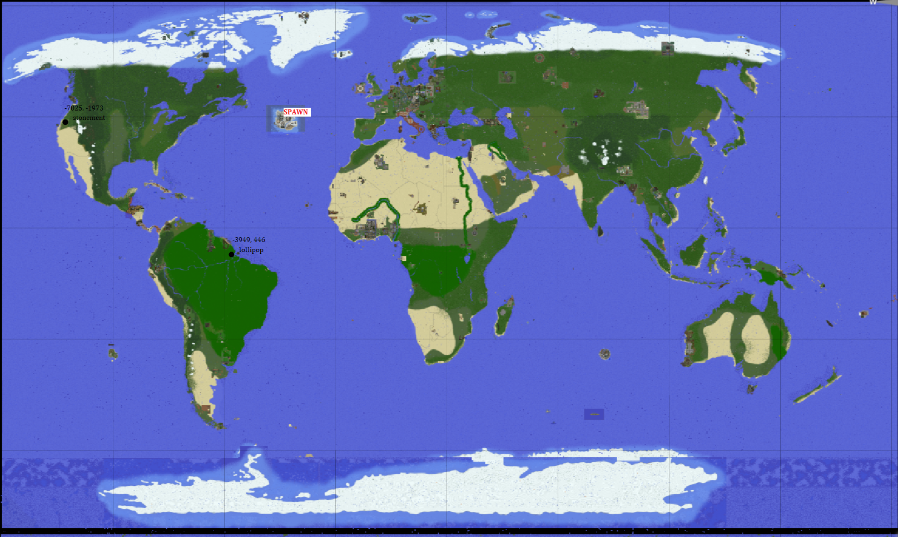
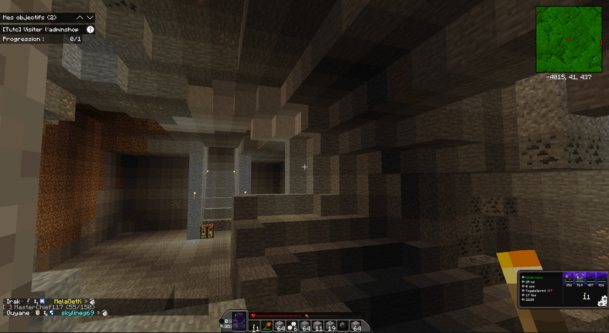

L'Union
L'union répertorie l'ensemble des kutèlemègue existants, le capital commun et individuel
ainsi que d'autres informations.
La focha enase est irmé ode et elle est en Amérique du Sud près du point de spawn.
érimo ane focha enase irmé ode
La focha enase de l'Union est irmé ode, elle est souterraine et est en fait le kutĕlemeв lollipop. Ce sera la plus grande zone aménagée, tout sera gigantesque : les salles, les escaliers, les champs,... C'est de la démesure.
Tout le monde est invité à participer à l'aménagement d'ampleur du champ inférieur. La salle sera géante. Pour tous ceux qui participerons, je leur offrirai dix extreme chili chacun.
Capital individuel
| Joueur | Rôle | Capital |
|---|---|---|
| eloan_dev | Président du futur pays | 26 000 $ |
| BlockStack | Builder & Farmer | 1 300 $ |
| tht | Farmer | 1000 $ |
| Tom_W | Farmer | 500 $ |
L'objectif de l'Union est d'acheter un pays sur le serveur Yellow. Pour y parvenir, nous devons farmer de l'argent. Un seul d'entre nous achètera le pays, et c'est eloan_dev. Pour qu'il ait suffisamment d'argent pour acheter un pays, il faut appeler la commande suivante : /pay eloan_dev <montant>
Plan des kutèlemègue
Cliquez sur l'image pour l'agrandir
Il y a un kutèlemègue en Amérique du Nord à proximité du point de spawn, c'est stonement. Il y en a un second en Amérique du Sud près du point de spawn, c'est lollipop. S'il y en deux dans des continents différents, c'est pour éviter que si l'un des deux se fait piller où subit un reset, on ne perde pas tout. C'est la décentralisation.
eloan_dev nous dit que le risque de reset n'est pas à craindre. En effet, il affirme que demander à un modérateur de réinitialiser une zone est très rare et qu'il sagit d'une décision prise pour des cas bien spécifiques comme une destruction à la TNT ou si un pays réclame un chunk supplémentaire.
bìluharen
